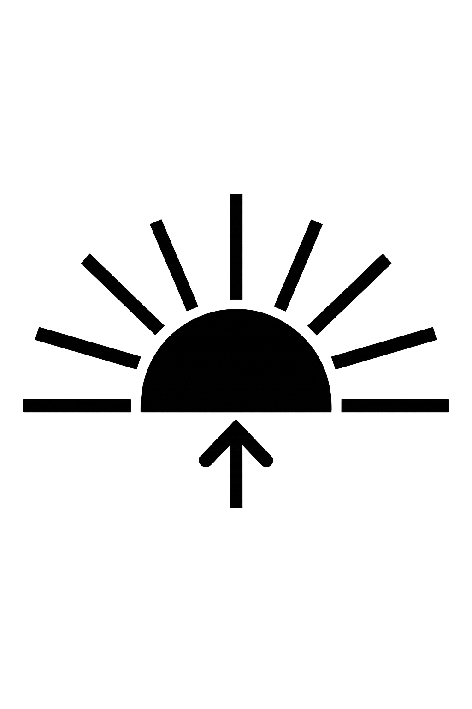
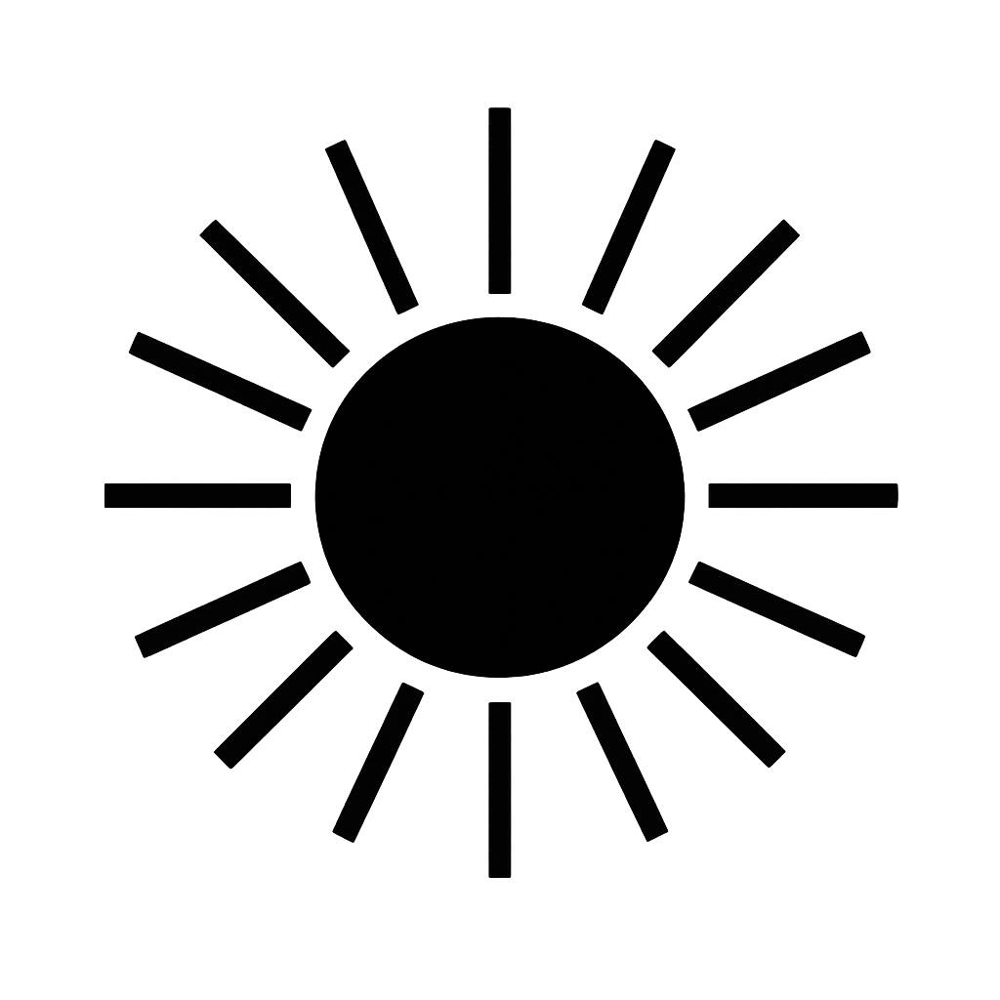
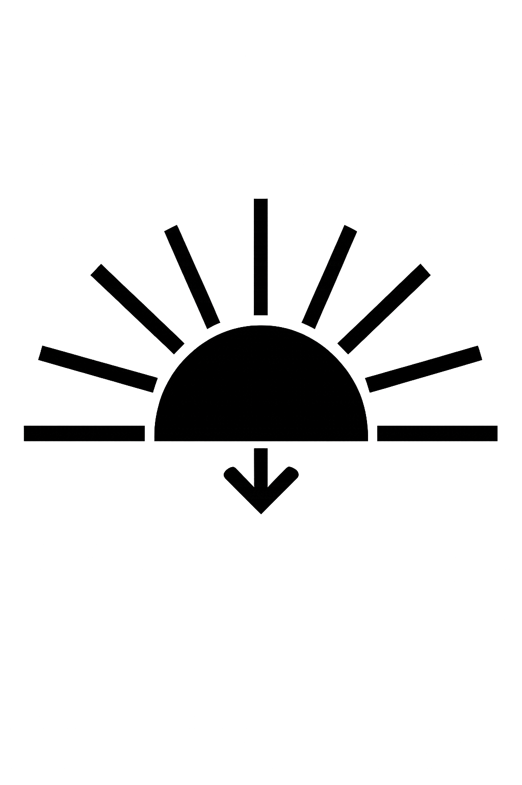

Klicke auf eine Stadt und entdecke ihren
Sonnenaufgang und Sonnenuntergang.
New York
Aktuell ist es in New York 23:00 Uhr

Sunrise 7:00 AM
Solar Noon 12:00 AM
Sunset 7:00 PMDer aktuelle Sonnenstand in New York
00:00
06:00
12:00
18:00
24:00